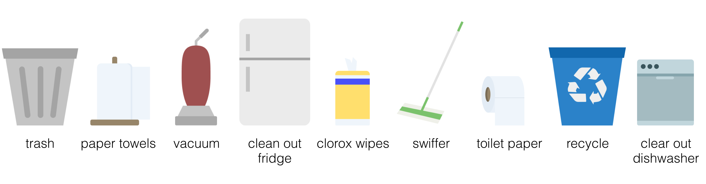
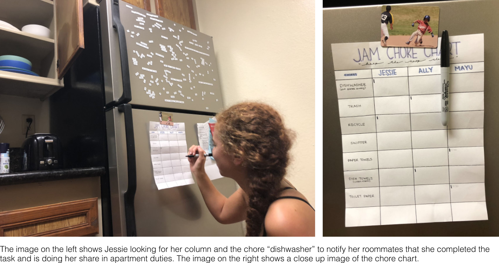
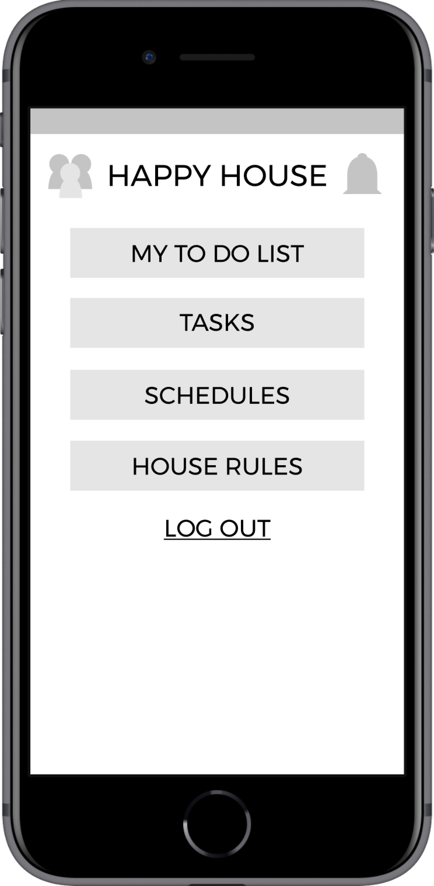
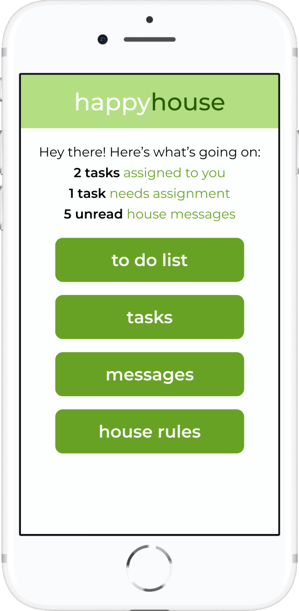

happyhouse
—Mobile app that makes living with roommates easy
PROBLEM
Tension between roommates builds up when trash isn't taken out, dishes aren't cleaned, rent doesn't get payed, etc. These issues are due to poor household management stemming from miscommunication. How can we improve communication between roommates?
USER RESEARCH
Each team member did an in-depth interview with a UCSD student about their housing situation, management and organization styles, and memorable/significant roommate stories they felt comfortable sharing. We chose these particular individuals to represent the diversity of housing situations—rooming with males vs females, the number of people you live with, and living in an apartment vs a house (note: the names were changed for privacy).

Our interview questions:
-
Which chores are shared by everybody? Which chores are your own responsibility?
-
How is it decided who does what chores? And when? Which chores do you not like to do?
-
How do you typically communicate with your roommates?
-
How do you pay your bills (rent, water, electricity, wifi)?
-
Do you have any house rules? If so, what are they?
-
What has your experience been living with your roommates?
MAJOR INSIGHTS
01. SHARED CHORES
We found that shared chores generally involve the communal living spaces,
such as the kitchen and living room. So chores like taking out the trash
and recycling, cleaning up the kitchen, and vacuuming are typically
divided amongst roommates. The logic here is that since the space is shared
its upkeep is shared as well.
02. DISTRIBUTING RESPONSIBILITY
We identified two distinct styles for distributing chores with their
main difference being how chores are
assigned (see figure below). Each come with their own set of problems,
but both heavily rely on an expectation that people are responsible and
remember to do their chores. However there is no
guarantee that people will contribute their fair share, which is why
a system of reminders and way of holding people accountable is needed.
ways of distributing chores
Another takeaway from our interviews was that messages about housing tend to get lost as they can easily go unnoticed amongst more exciting messages about a party, gossip, etc. Additionally, most interviewees said they used text and facebook messenger which makes messages getting lost even more likely as it can be hard to juggle between two apps. This presents a need for one system of communication that solely handles household aspects so that there's no other distractions.
In summary, our interviews led us to focus on improving how roommates communicate household needs as this seems to be at the root of most of the problems we observed.

writing down user needs found from our interviews (and putting them on the floor because they wouldn't stick to the wall lol)
STORYBOARDS
We constructed storyboards to help us come up with ideas on where we can target improving communication. Looking at scenarios roommates might encounter helped us narrow our ideas for what functionalities to include in our app. By addressing 3 different problems, we were able to come up with 3 main functionalities for our app, which involves a chores tracker, creating house rules, and a chores reminder.

storyboards of scenarios roommates might encounter
Chores Tracker: The chore tracker storyboard was inspired by how house-related messages get lost or overlooked in the midst of other texts, Facebook messages, etc. We want to emphasize these messages by confining house-related chats to one app, so people don't have to mix house issues with other messages. We like this idea because it allows roommates to read a continuous house-related feed instead of having to scroll back through texts.
House Rules: Different understandings of how to do a chore can lead to unnecessary arguments over wrongful completions of that chore. The house rules storyboard centers around this need for a defined set of rules/steps, so that everyone is on the same page. We liked this idea because it helps hold roommates more accountable for doing a chore correctly, and it simply helps define a list of house rules and steps for chores that can easily be accessed.
Chores Reminder: Since chores aren't assigned using the tally chart method, this allows a lot of freedom and flexibility, which can be good, but can also be bad because you're relying on the idea that people will complete their fair share and will do so consistently. The dirty dishes storyboard includes a feature that helps assign specific chores to people and sends reminders, so that there is no confusion as to who is in charge of what and holds people accountable for doing their fair share.
WIREFRAMES
With our main functionalities in mind, we thought of the user flow we wanted and sketched out some screens. In this user flow, we focused on creating and assigning tasks, as well as being able to set a reminder for a task.
USER TESTING
With the wireframes we sketched out, we tested the interactions of our app with students. Below is a list of feedback we received in addition to observations we made.
- multiple interviewees said they probably wouldn't use the alarm feature
- "is there a message thread for each chore?"
- don't want notifications sent each time a chore is completed!!!
- "if you let people reject a chore that was assigned to them, it might never get done"
- tabs need to be moved to the top
SUPPLIES
- change 'supplies' to 'tasks' for clarification
- not inuitive to press the checkbox to assign a task >>> need directions
- tabs need to be moved to the top
- multiple people tried to complete a task in the 'complete' tab >>> change the name to history
- "seems unnecessary because you could just use a google calendar"
- not clear if this is for class schedules, work schedules, etc.
HOUSE RULES
- "can anyone add a house rule?"
- "what if people don't agree with it?"
BILLINGS
- "can you pay your bills from here?"
- "wouldn't this go under schedules?"
PROTOTYPE
After reviewing the feedback we received from user testing, we made significant changes to our notification system, task creation functionality, and wording. These changes provide clarity for our user making their interactions with our app easier.
01. home screen
Original—During our user testing, many people mentioned wanting more updates, but failed to navigate to the notifications page which had these updates.
Final—Taking this into consideration, we removed the notifications page and put important updates on the home page itself so that users can see these notifications right when they open the app.
Original
Final
Although we made some pretty significant changes, overall we kept the user flow relatively similar to our initial design. We made tweaks to improve the problems we observed but kept our focus on creating an easy-to-use communication system for housing needs.
completing a task
creating a task
assigning a task
REFLECTION
Overall my team and I were really proud of our final design. Roommate conflicts are something that everyone experiences (you're lucky if you haven't lol), so we're glad we could create an app that a lot of people could use! I think my favorite part was probably doing user testing and realizing that features we thought were useful were not thought to be helpful for a lot of our testers. It really showed us that even though you design something with the user in mind, it might not actually be what the user wants/needs, which is why user testing is so important to validate our designs!
PROTOTYPE WALKTHROUGH
Interact with our prototype to complete these steps!
- Complete both of your tasks
- Create a new task and assign it to Emma
- Assign the unassigned task to Lily
- See what people are working on
- See what people have completed
- Check and respond to your messages
- Review the house rules